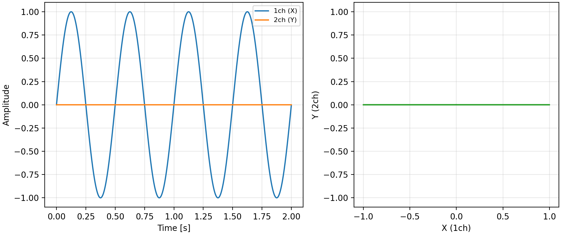
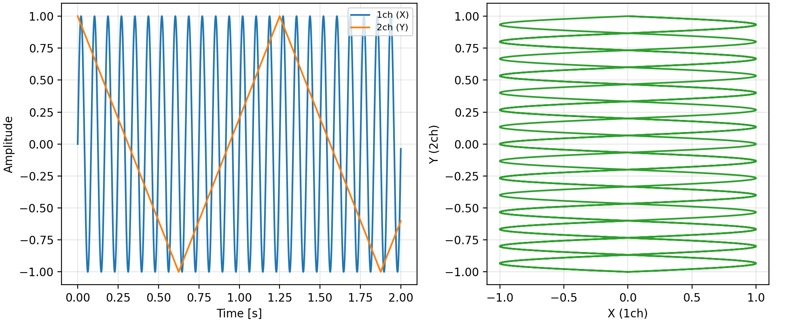
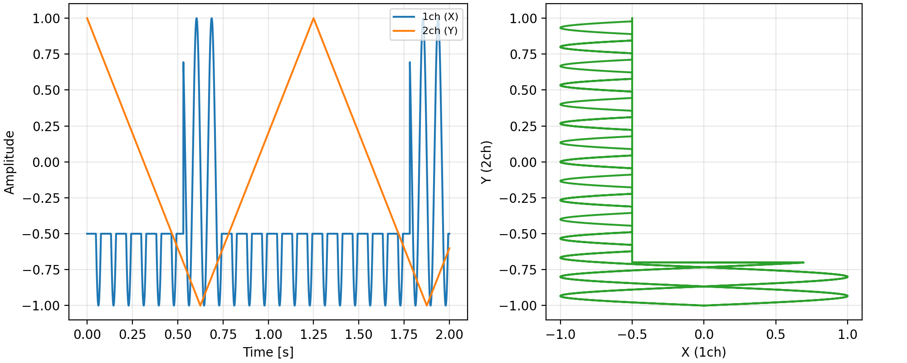
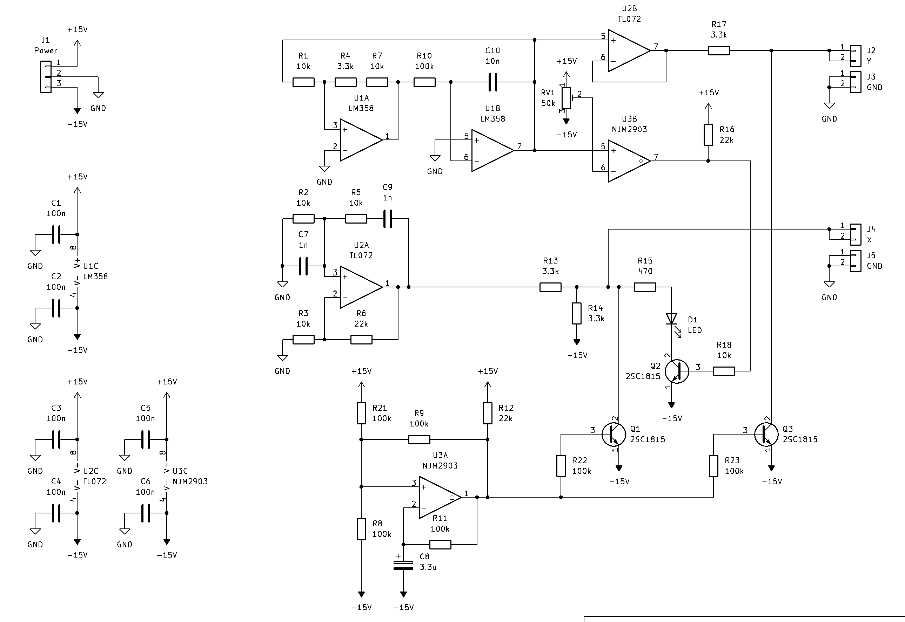
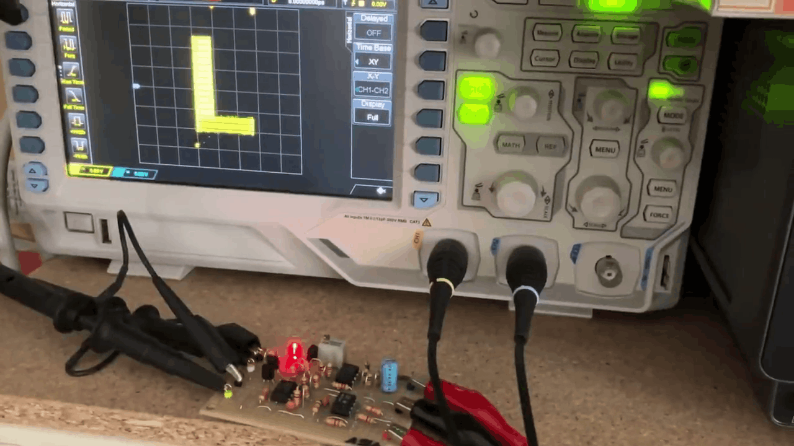

電子工作のHello, world!ともいえるLチカ。マイコンでGPIOを操作し、LEDを点滅（チカチカ）させることです。Lチカができるようになれば電源やクロック、GPIOやタイマーを使えることと同義ですので、もうそのマイコンで何でもできるようになったといっても過言ではないでしょう（過言です）。そんなLチカを、純アナログ回路で面白くやってみようというのが今回の回路です。
ただLEDをチカチカしても面白くないので、今回はオシロスコープ上に「L」の文字を表示し、それもチカチカさせます。
オシロスコープ上に図形を表示するためには、XYモードを使います。これはCh1をX軸、Ch2をY軸として画面に表示するモードです。XYモードでどのような波形を入れるとどのような図形が見られるのか、例をあげます。

XYモードの例1
Ch1の正弦波に対応してX軸が左右に動くので、横向きの直線が表示されます。

XYモードの例2
Ch1の高い周波数の正弦波に対応してX軸が高速で左右に動き、Ch2の低い周波数の三角波に対応してY軸がゆっくり上下に動くので、塗りつぶされた四角形が表示されます。
例2の正弦波を、適切なタイミングと電圧でクリップすればL字の図形を作れます。

XYモードでのL字表示
この例では、三角波が-0.7V以上の時に正弦波を-0.5Vでクリップしています。これを電子回路で実現すれば、オシロスコープに「L」の文字を表示できます。
回路図は以下の通りです。

回路図
回路は、U2Aのウィーンブリッジ発振回路（正弦波）、U1AとU18の三角波発振回路、U3Aの弛緩発振回路（矩形波）、U3Bの閾値検出回路、Q2とD1のクリップ回路、Q1、Q3の禁止回路から構成されます。
これらのうち、L字の生成に関わるのはウィーンブリッジ発振回路と三角波発振回路、閾値検出回路とクリップ回路です。2つの発振回路で四角形を生成したのち、L字に整形します。この際、クリップ電圧の生成にはLEDの順方向電圧降下Vfを使っています。これにより、LEDが点滅とL字生成の両方の役割を果たすことになります。
チカチカは、弛緩発振回路と禁止回路で行います。両chの出力電圧をQ1、Q3で-15Vに固定することで、オシロスコープ上の表示を点にします。これによりLの表示が消えるのと同時に、LEDへの電流を遮断します。

動作の様子
完全に駄洒落ですが、アナログ回路の面白さが詰まっているのではないかと思います。